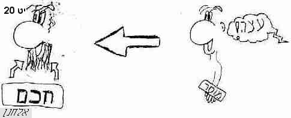

עצמים מופשטים כלליים
אֹבֵד
אַבדן
- [שם מופשט כעין מקור] [שבי"ל]
אָבדן
אוּל
- [רק בשייכות "אולם"] [שבי"ל]
אָון
אוסף
- = אסיפת תבואה [שבי"ל]
אוֹר[מ]
- = כמו "חכמה", "שכל" [שבי"ל]
אורך
אחוה1
- = הא' נוסף [שבי"ל]
אֵיד
אִישוֹן[מ]
- = שם מופשט על משקל "כידור" [שבי"ל]
אכזב
- = על משקל "אחוה", "ארבע" [שבי"ל]
אכילה
אכֶף
אליל
אלמון
אלמנוּת
אלקום
- = מורכב מן "אַל" ו"קוּם" [שבי"ל]
אמונה
- = ענינים שונים לפי הוראות הפועַל, ונרדף גם לצדק ויושר, כי הצדק והיושר נכונים וקיימים [שבי"ל]
אֱמוּנים
אֵמֻן
- = ע' רש"י דברים לב20 [שבי"ל]
אֹמֶן
אֲמָנָה
אָמנה
אמצה
- = "אומץ" בלשון נקבה [שבי"ל]
אמת
- = היפך שקר, ונרדף לאמונה [שבי"ל]
אסון
- = מקרה ופגע רע [שבי"ל]
- מעמדם של עוברים / אראל
אֵסוּר
- = על משקל "אבוס" [שבי"ל]
אספה
- = "אוסף" בלשון נקבה [שבי"ל]
אֱסָר
אִסָּר
- = ידוע בדברי חז"ל [שבי"ל]
- [באה רק בספר במדבר] / מוטי אהרוני (MOTI_AHARONI @ WALLA.CO.IL) -> האתר
אפודה
אָפְנִים
- = ענינו סדר ראוי ונכון [רק בשייכות "אפניו"] [שבי"ל]
אֹרֶב
ארֶג
ארוכה
אֱשוּן
- [שם מופשט כעין מקור] [שבי"ל]
אָשָם[מ]
- = שם מופשט, והושאל לקרבן האשם [שבי"ל]
- אוילים - יליץ אשם; ובין ישרים - רצון / אראל
אשרי-
- = שם מופשט בלשון רבים בסמיכות, ולא ייפרד, כמו "נעורים" "זקונים" [שבי"ל]
- אשרי שיאחז וניפץ את עולליך אל הסלע / אראל
- ושומר תורה - אשרהו / אראל
באֹש
בֶגֶד1
בֶדֶק
בֹהוּ
- = נרדף ל"תוהו" [שבי"ל]
בוּזה
- = "בוּז" בלשון נקבה [שבי"ל]
ביאה
ביניים
בִיעָף
- = על משקל "בִיקָר", ראב"ע דניאל ט21 [שבי"ל]
ביקורת
בְלִי
בֶלע
בעותים
בְעֵרָה
בֶצע
בְצַעַם
בִצָּרוֹן
בַצָּרוֹת
בַצֹּרֶת
- = לשון מבצר, וכן חיברו מנחם, רש"י. כלומר, שהשמיים חזקים כברזל מלהוריד מטר, וכמו שכתוב "ונתתי שמיכם כברזל", ותרגם אונקלוס "ואתן ית שמיא דעלויכון תקיפין כפרזלא מלאחתא מטרא", ויש מפרשים "בצורת" גם "הבצרות" לשון רעב [שבי"ל]
- על הבצורת / ד"ר נח חכם -> מתוך: סיני שנה ט' כרך י"ז עמ' קנו - קסז
בקרה
- [שם מופשט כעין מקור] [שבי"ל]
בקשה
בָרוּת
ברית
ברָכָה
ברכת ה'
בָתָה
בַתּוֹת
בֶתֶר
גאולה
גאות
גֹבַהּ
גבלות
- = ע' רש"י וראב"ע שמות כח 14-22 [שבי"ל]
- [באה רק בספר שמות] / מוטי אהרוני (MOTI_AHARONI @ WALLA.CO.IL) -> האתר
גדוּלה
גֹדל
גֵוָה
גולה[מ]
גולם
- = קיפול בבטן האם, כי הולד דומה במעי אמו לפנקס שמקופל וכו', נדה ל [שבי"ל]
גזית[מ]
- = שם מופשט לסיתות ופסילות באבנים , ו"אבני" סמוך לו, ועל הרוב הוא במובן [כלומר, לא כתוב בפירוש "אבני גזית" אלא רק "גזית", ומובן שהכוונה ל"אבני גזית" - אראל] [שבי"ל]
גֵזֶל
גִזרה[מ]
גָלות
גְמוּל
גְמוּלה
גרֶש
גֶרֶשׂ
דבֶק
דִבֵּר
- = על משקל "עיוור" [שבי"ל]
דֹבֶר
- = רק בסמיכות "בדברךָ", "כדברָם", "הדברוֹ" [שבי"ל]
- דבר = הנהגה / אביתר כהן -> האתר
דבר טוב
דהרוֹת
- = שם מופשט בלשון רבים [שבי"ל]
- [באה רק בספר שופטים] / מוטי אהרוני (MOTI_AHARONI @ WALLA.CO.IL)
דוּגה
דוּמָם
דופי
- = גנאי [שבי"ל]
דֶחי
דִין
- = שם מופשט, כמו "משפט" [שבי"ל]
דַלָּה[מ]
דלֶף
דֹם
- [רק בצורה "בְדָמְךָ"] [שבי"ל]
דֳמִי
דמיון
דֵע
דֵעה
- = "דֵע" בלשון נקבה [שבי"ל]
- = בלשון ימינו עמדה סובייקטיבית; בלשון המקרא ידיעה אובייקטיבית / אראל
- הילדים הם התקוה / אראל
דעת
- = מקור תחת שם מופשט [שבי"ל]
- חכמה - תבונה - דעת / -> פו"ס משלי א
- עצה בלי דעת / ע"פ רש"י
דעת אלהים
דעת ה'
דעת טוב ורע
- בר ג 06 / לאה קנטן -> משחק שבת ס"ג
- המושכלות והמפורסמות / טל רבינוביץ -> פורטל ארץ הצבי
- וידעו כי עירומים הם / יעל (שאל: אראל)
- ידע טוב ורע - שמע טוב ורע / אראל
- מבט על עץ הדעת / דקלה אלפי -> כפית ה'תשס"א כסלו
- מהי דעת טוב ורע? / מחברים שונים -> דיון שבת אדר נ"ט
דראון
- = מיאוס ובזיון [שבי"ל]
דרור1
דרך איש
דרך ה'
דרך חיים
דרך רע
דרכי חושך
דרכי מוות
דֶשֶן1
דָת
- = חוק ומשפט ומנהג [שבי"ל]
- דבר המלך ודתו / ר' קורמן -> תכלת אברהם
הבהבים
- = שם מופשט רבים, מעניין "הב הב" בציווי [שבי"ל]
הֶבֶל
- הבל הבלים אמר קהלת הבל הבלים הכל הבל / יהושע רוזנברג -> אתר דעת
- 'ילד קורא בקהלת' / תמר ביר -> כפית
- מה שבא בקלות - הולך בקלות / אראל
הגות
הגיג
- = כפול העין, כמו "זנונים", ראב"ע [שבי"ל]
הִגָּיון
הֶגְיון
הדבר הזה
הֶדֶר
הדרה
הוֹד
- = נרדף להדר [שבי"ל]
הַוָּה
הווָה
הוות
הַוּוֹת
- = על משקל "כמוֹן", "רתוֹק" [שבי"ל]
הוללוּת
הולֶם
הַוָּת
הֻידות
- = מענין א [הכרת חסד ה'] [שבי"ל]
היתוך
- = מענין "התיך" [שבי"ל]
הַכָּרָה
הליכה
הלמות
המון[מ]
הנָחָה
- = מענין "הניח" [שבי"ל]
הפוגות
הֵפֶך
הפֵכה
- = הריסת דבר [שבי"ל]
הַפְצַר
הצלה
הרֶג
הרֵגה
- = "הרֶג" בלשון נקבה [שבי"ל]
הרון
הריון
הריסֻת
הרֶס
השמעוּת
- = מענין "השמיע", תחת מקור [שבי"ל]
התולים
התחברות
זבֶד
זֶבח
זוֹב
זוהר
זִיז2
- = חלב ודשן [שבי"ל]
זֵכֶר
זִכְרון
זִכָּרון
זכרון תרועה
- חג הסוכות או חג לה'? / ר' עת-שלום -> אתר torah.org
- מדוע ראש השנה נחשב ליום הדין? / ר' מנחם ליבטג -> tanach.org אתר
זֻלּוּת
זלעפה
- = ענינו אימה ורעדה, וע' רש"י [שבי"ל]
זמָּה
- = נרדף לנבלה [שבי"ל]
- אל תחלל את בתך להזנותה, ולא תזנה הארץ / אראל
- זבח רשעים תועבה, אף כי בזימה יביאנו / ע"פ מלבי"ם -> פו"ס משלי ב
- זימה ותועבה / אראל -> פו"ס 10; לא גמור
זְמָם
זִמֹּת
זנוּנים
- = שם מופשט רבים, ולא ייפרד [שבי"ל]
- איך ציווה ה' על הושע לקחת אשת זנונים וילדי זנונים? / פרידה, אראל, יעל נ', הלל ג' -> ככר נח"ת
זנוּת
זעוה
זעֵיר
זֶרח
חֹבֶא
חביון
חֶבֶל2
חֶבֶר[מ]
חֶבְרָה
- = "חֶבֶר" בלשון נקבה [שבי"ל]
חגא
- = ענינו תנועה רעדית [שבי"ל]
חוֹב
חוּג
חוסֶר
חופש
חוק ומשפט
חוק[מ]
חוקה
- = "חוק" בלשון נקבה [שבי"ל]
חוקת עולם
חורף1
- = עילוי וחשיבות, ידוע בש"ס ראש פרק "הזהב" וש"מ, וכן תרגומו - "בימי חריפותי" [שבי"ל]
חזון
חזוּת
חזיון
חֶזק
חֹזק
חָזְקה
- = "חֹזק" בלשון נקבה [שבי"ל]
חֵטְא
חֲטָאָה
- = "חֵטְא" בלשון נקבה [שבי"ל]
- יש ה 19 / נופר דסקל
חַטָּאָה
חַטָּאת[מ]
חיבוק
חיוּת
חיים
- = תואר רבים, והוא גם שם מופשט בלשון רבים ולא ייפרד, היפך "מוות" [שבי"ל]
חִיל
חַיִל
חִילה
- = "חִיל" בלשון נקבה [שבי"ל]
חיפזון
חיתול
חכלילות
חֵל
חֹל
חלוף
חלוקה
חליפה
- = "חלֶף" בלשון נקבה [שבי"ל]
חליפות[מ]
חלֶף
חלֶק2
חמֶד
חמדה
- = "חמֶד" בלשון נקבה [שבי"ל]
חמָס
- = מעשה שגורם אי-צדק באופן ישיר / אראל -> מכתב
- פי רשעים יכסה חמס / ע"פ דעת מקרא
- שוד וחמס לנגדי / אראל
חן חן
חנוכה
חנופה
- = "חֹנֶף" בלשון נקבה [שבי"ל]
חַנּוֹת
- = לשון רבים, על משקל "שַמּוֹת" [שבי"ל]
חנינה
חֹנֶף
חסֶד
- קרבנות לעומת ערכים אחרים
- אהבות בתנ"ך / אראל
- עדיף לא להבטיח, מאשר להבטיח ולא לקיים / אראל
- עשות משפט ואהבת חסד / יהודה איזנברג -> קול ישראל
- איש חסד - איש אמונים / אראל
חסד ואמת
- = א. מעשה טוב מתוך חובה ומעבר לחובה; ב. מעשה טוב לתמיד וללא בקשת גמול / אראל
- דרכי ה' שהתגלו למשה / אראל
- השלטון צריך לעשות גם חסד, לא רק אמת / אראל
חסות
חֶסֶר
חֵפֶץ
חפֶשׂ
חֲצי
חֵצי
חקֶר
חֹרֶב1
- = הושאל לחום השמש החזק שמייבש [שבי"ל]
חֹרֶב2
חָרְבָה
- = "חֹרֶב2" בלשון נקבה [שבי"ל]
חרבונים
- = חום השמש [שבי"ל]
חרושת
חרֶם[מ]
חררים
- = רבים, ולא ייפרד [שבי"ל]
חֶרֶש
חֶשְבוֹן
- = חישוב דבר מדבר בערך והיקש [שבי"ל]
חשרה
חֵת
- [רק בסמיכות "חִתּכם"] [שבי"ל]
חִתּה
- = "חֵת" בלשון נקבה [רק בסמיכות "חִתּת"] [שבי"ל]
חתולה
חתונה
חִתִּית
טֶבַח
טבחה
- = "טֶבַח" בלשון נקבה [שבי"ל]
טוּב
טומאה
טורח
טחנה
טלטלה
טַעַם
- = ובמוסרי הוא החכמה הבינה והעצה [שבי"ל]
טרֶף[מ]
יגיע[מ]
יגיעה
- = "יגיע" בלשון נקבה [שבי"ל]
יד ה'
יהָב
יחַשׂ
יסוּד
יצוקה
- = על-משקל "מלוכה", רד"ק [שבי"ל]
יִקּהַת-
- = ענינו תורה [שבי"ל]
יקוֹד
- = על-משקל "כפוֹר" [שבי"ל]
- [באה רק בספר ישעיהו] / מוטי אהרוני (MOTI_AHARONI @ WALLA.CO.IL) -> האתר
יְקָר
ירֵשה
- = מגזרת "ואם לא תורישו" [גירוש], במשקל "לְבֵנָה", והוא תחת תואר השם, כמו "והיתה הארץ שממה" כו', ראב"ע במדבר כד18. וע' שורש אבב [שבי"ל]
- [באה רק בספר במדבר] / מוטי אהרוני (MOTI_AHARONI @ WALLA.CO.IL) -> האתר
ירֻשה[מ]
ישועה
- = "יֶשַע" בלשון נקבה [שבי"ל]
יֵשַע
יֶשַע
יֶשר
יִשרה
- = "ישר" בלשון נקבה [שבי"ל]
יְתוּר
- = על-משקל "יבול", "יקום" [שבי"ל]
יֶתֶר1[מ]
יתרון
- = מענין "מוֹתר" [שבי"ל]
- [באה רק במגילת קהלת] / מוטי אהרוני (MOTI_AHARONI @ WALLA.CO.IL) -> האתר
כבדות
כבוּדה
כהונה
כובד
כוֹס
כושרות
כזָב
כֹח1
כַחַש
כִיד
כלֶא
כָלָה[מ]
- = מענין א, כליון והשחתה [שבי"ל]
כלולות
- = רבים, ולא ייפרד [שבי"ל]
- [באה רק בספר ירמיהו] / מוטי אהרוני (MOTI_AHARONI @ WALLA.CO.IL) -> האתר
כֶלַח
- = חוזק ובריאות הגוף [שבי"ל]
- [באה רק בספר איוב] / מוטי אהרוני
כליון
- = כמו כָלָה [שבי"ל]
כִנעה
כסֶל2
כפֶל
כֹפֶר1[מ]
- = דבר המכסה ומגן על הנפש מעוון, ככסף ושאר דברים, כמו כופר טבעי שמכסה ומגין [שבי"ל]
כִפֻּרִים
- = רבים ולא ייפרד, מוסרי [שבי"ל]
כריתות
כשלון
כשֶף
- [רק ברבים "כשפים"] [שבי"ל]
כתָב[מ]
כתובת
כתֶם
- = זהב אדמדם; לכלוך מדם נידה / משה צפור -> מתוך: מורשתנו ט', התשנ"ה
- = זהב טוב ומזהיר [שבי"ל]
לאֵל-
לֵדה
- [שם מופשט כעין מקור] [שבי"ל]
- הלא חבלים יאחזוך כמו אשת לדה / אראל
לַהַג
- = מחשבה ועיון בדבר [שבי"ל]
לַהַט
לויה
לזות
- = על-דרך נחי ל-ה [שבי"ל]
לֵח
לחֶם2
- = כמו "מלחמה", ע' רד"ק שופטים ה8 [שבי"ל]
לַחַץ
לַחַש[מ]
לָט
לכֶד
לצון
לֶקַח
- = משמש על הרוב ללימוד דעת [בעבור מה שייקח אדם מן הדעת, ראב"ע משלי א5] [שבי"ל]
מאוד-
- = מטעם "מאוד מאוד" [רק בכינוי-שייכות "מאודך", "מאודו"] [שבי"ל]
מאומה
- = היפך "כל", כמו "כלום" בלשון הש"ס [שבי"ל]
מאור[מ]
- = מענין "האיר" [שבי"ל]
מארה
מבוא[מ]
מבוסה
מֶבט
מַבט
מבצר[מ]
מגֶד
מגדול[מ]
- = על-משקל "משלוח" [שבי"ל]
מגוּרים
- = שם רבים ולא ייפרד, כמו 'נעורים' 'שעשועים', וענינו חניה, ותרגומו "תותבוּת" [שבי"ל]
מגינה
- = על-משקל "כלימה" [שבי"ל]
מְגַמָּה
- = בליעה [שבי"ל]
מגרעת
- [רק בריבוי "מגרעות"] [שבי"ל]
מדון
- = שם מופשט, כמו "מריבה" [שבי"ל]
- ויהי ריב ומדון יישא / אראל
- מריבות בספר משלי
מדחה
מדחפה
- = רק ברבים "מדחפות" [שבי"ל]
מדייני אישה
מדינים
- = שם מופשט רבים, ולא ייפרד [שבי"ל]
- [באה רק בספר משלי] / מוטי אהרוני
מדנים
מדָּע
מדקרה
מדרש
מהומה
מהלומה
- = רק ברבים "מהלומות" [שבי"ל]
- [באה רק בספר משלי] / מוטי אהרוני
מהלך
מהלל
- [שם מופשט כעין מקור] [שבי"ל]
מהפכה
- = הריסת דבר [שבי"ל]
מהתלות
מוֹבא[מ]
מוֹט[מ]
מוּלֹת
- = מענין "מַל" [שבי"ל]
מוּסד
מוֹסר
- = עונש [שבי"ל]
מוּסר
- = על הרוב - בלימוד [שבי"ל]
- 
- איך לקבל ביקורת? / אראל
- חדל בני לשמוע מוסר, לשגות מאמרי דעת / ר' צוקרמן, אלחנן לוטוק, ר' מלכיאל
- חכמה - מוסר / אראל
מוסר אב
מוּעדה
מוּצקת
- = על-משקל "מולדת" ובשורוק, רד"ק [שבי"ל]
מוקד
מורא[מ]
מורד[מ]
מורש
- = כמו ירֻשה [שבי"ל]
מורשה
- = "מורש" בלשון נקבה [שבי"ל]
מושב
מוֹשעוֹת
מוּת
מָוֶת
מזֶג
- = כמו מסך, וע' ראב"ע [שבי"ל]
מֵזח[מ]
מזיח
מזִמָּה
מזער
מזרע
מחבֵא
מחגורת
מחזה
- = מראה נבואה [שבי"ל]
- [באה רק בספר מלכים א] / מוטי אהרוני (MOTI_AHARONI @ WALLA.CO.IL)
מֶחזָה
- = ת"י "זוי", וע' רש"י ורד"ק מל"א ז [שבי"ל]
מחי
- [חסר א', כמו "החלי"] [שבי"ל]
מחיה
- = על הרוב מענין "החיה" [שבי"ל]
מחיתה
- = אמצעי לשבירת חומה; ובהשאלה - כל דבר ששובר את האדם או את רכושו / אראל
- הון עשיר קרית עוזו, מחיתת דלים רישם / אראל
מחנק
מחסור[מ]
מַחְצֵב
מחצה
מחשבה
- ביטויים בספר ירמיהו שעוד לא מצאתי להם הסברים / אראל -> לא גמור בכלל
- הכל פתוח - גם בתחום הרוחני / אראל
מחשׂוף
מחשך
מטָּרָא
- = א' תחת ה' [שבי"ל]
מטָּרָה
מידה
מִין
- = כלל פרטים המשתווים בענין מה [שבי"ל]
מִיץ
- = התמדת מישוש והתעסקות בדבר [שבי"ל]
- [באה רק בספר משלי] / מוטי אהרוני
- שלוש סיבות לא להגיב על עלבון / עפ הגרא
מישור[מ]
מכביר
- = ע' שורש ערצ [שבי"ל]
מכָּה
מִכְלוֹל
מִכְלַל
מַכְלֻל
- = מופיע רק ברבים "בְמַכְלֻלים" [שבי"ל]
מִכְסָה
מכֶר[מ]
מכרה
מכשול
מִלֻּאָה
מלאכוּת
מִלֵּאת
מלוא-
- = מקור תחת שם מופשט, כמו "גבוה קומתו", "בגדול זרועך" [שבי"ל]
מִלּוּאִים
- = בא גם למילוי יד לחינוך [שבי"ל]
מלוכה
מלחמה
מלֶט
מליצה
מלכות
ממותים
ממכרת
ממלכה[מ]
ממֶר
ממשל
ממשלה
ממשק
- = גידול צמח [שבי"ל]
מנהג
מנוד
מנוח
מנוחה
- = מרגוע [שבי"ל]
מנוס
- = רובו - ענינו כמו "מחסה", שנסים אליו לעזרה [שבי"ל]
מנוסה
מִנְלָם
מסָּה
מַסָּה
מסורת
- = חסר א [שבי"ל]
מסָּח
מסחר
מסָּע
מספר1
מספר3
מעבָד
- = מעשה [שבי"ל]
מעבה
מעבר[מ]
מעדנות
מעוז[מ]
מעוּף
מְעט[מ]
מַעַל
מֹעַל
- = הגבהה והרמה [שבי"ל]
מעֲלָה
- = "מעלֶה" בלשון נקבה [שבי"ל]
מעֲלֶה[מ]
מעמד
מעמסה
מענָה
מענית
מַעַר
- = ענינו דבוק, מדברי חז"ל (ע' רש"י מל"א ז36) [שבי"ל]
מערֶה[מ]
- = כמו ערוה [שבי"ל]
מעריץ
- = על-משקל "מכביר", "מעשה", "מנגינה"; ונרדף ל"מורא" [שבי"ל]
מערצה
מעשׂה
מפָּח
מפָּלה
מפלשׂ
- = רק בריבוי "מפלשׂי-" [שבי"ל]
מפקד
מפתַח
- = כמו "פתחון" [שבי"ל]
מֵץ
מצָּב[מ]
מצָּה2
מצוה
- כי נר מצוה, ותורה אור, ודרך חיים תוכחות מוסר / אראל (הגהה: יעל)
- המצוה הזאת... לא נפלאת היא ממך ולא רחוקה היא / אראל
- שלום רב לאוהבי תורתך? / אראל
- תורה ומצוה בספר משלי / אראל
מצוֹק
מצוּקה
- = "מצוק" בלשון נקבה [שבי"ל]
מצור
מצורה
- = "מצור" בלשון נקבה [שבי"ל]
מצעד
מצער
מקוה1
מקוה2[מ]
מקור חיים
מִקח
מקטר
מקלט
- = ענינו אחיזה וקבול [שבי"ל]
מקנָה
מקסם
מקרא
מקרא קודש
מקרה
מֵרִאשות
- = ע' רד"ק יחזקאל לו11 [שבי"ל]
מַרְאֲשות
- = "מראשותיכם" ת"י "יקרכון" [שבי"ל]
מִרבה
מַרבֶה
מרבית1
מרבית2
מרגוע
מרגעה
מרֶד
מרדוּת
מרוּד
- = נרדף ל"עוני" [שבי"ל]
מרוץ
מרוצה
מרוֹרה
מרזח
- = משתה, רש"י [שבי"ל]
מרִי
מריבה
מרירוּת
מרכולת
מרמה
מרמס
מרעית
מרפא
מרפה
מרפשׂ
משָּׂא
- = כובד הנישא על האדם ויהיה לו לטורח ועומס, וגם נבואת פורענות נקראת בשם "משא", שהוא לטורח ועומס השומעים. והושאל לכל נבואה, ולכן כעס ה' על האומרים "משא ה'", ואמר [יר' כג] "ואמרת אליהם את מה משא ונטשתי כו'", כלומר זה עיקר הוראת משא - לנבואת פורענות [שבי"ל]
משֹּׂא
משָּׂאה
- = "משָּׂא" בלשון נקבה [שבי"ל]
משאון
משאלה
מִשבת
- = שביתה [שבי"ל]
משׂגב[מ]
מַשֶּה
- = על-דרך "מטה", ולדעת רבים הוא פועל, ראב"ע [שבי"ל]
משואה
משובה
משזר
- = ענינו קליעת שש [שבי"ל]
- [באה רק בספר שמות] / מוטי אהרוני (MOTI_AHARONI @ WALLA.CO.IL) -> האתר
משחה
משׂחק
מַשחֵת
מָשחָת[מ]
משטוח
משטח
משטר
משיסה
משֶך[מ]
משכב[מ]
משכית

משָל[מ]
משלוח
משלוש
- = על-משקל "משלוח" [שבי"ל]
משלח
משלח יד
משלחת
- = "משלח" בלשון נקבה [שבי"ל]
משמה
משמן
משמע
משמעת
משמר[מ]
משמרת[מ]
משנֶה[מ]
- = ענין כפל [שבי"ל]
משעי
מִשעַן
משפט
- קרבנות לעומת ערכים אחרים
- ירמיה לפני שופטיו / שלמה דב גויטיין -> מתוך: שתי מסות על ספר ירמיהו, "עיונים" למדריך ולמורה
- מלך במשפט
- משפט - חסד - הצנע לכת / יהודה איזנברג -> קול ישראל
משֶק
- = גידול ואמון בבית [שבי"ל]
משקול
משקל
משקע
משרה
משׂרה
משתה[מ]
- = שתיה [שבי"ל]
מתכונת
- = כמו "תוכן" [שבי"ל]
מתֹם[מ]
- = לשון כליה [שבי"ל]
מתֶק
מֹתק
נאפופים
נאצה
נבוּאה
נגֶף
נדבה[מ]
נִדָּה[מ]
נדֶר[מ]
נֹהּ
נהרה
נוֹד
נומה
נזֶק
- = הפסד [שבי"ל]
נזֶר1
נֹחַם
נחמה
- = מענין ב [ריצוי מיגון ועצב] [שבי"ל]
נַחַש
נַחַת2
נטֶל
- = משא [שבי"ל]
נֶטַע
ניאופים
נִיד
ניחוח
ניר1
ניר2
נכוח[מ]
נֵכַר
נכֹת
- = חמדה [שבי"ל]
נסיבה
נסֶך
נֹעַם
נפֶץ
נפתולים
נקיון
נקָם
נקמה
נֹקֶף
נקפה
- = הכאת מכה [שבי"ל]
נשיה
נשיקה
סבֶל
סֻבֳּל
סגריר
- = על-משקל "עבטיט" [שבי"ל]
סדרים
- = תרגומו "מערכות סדרין" [שבי"ל]
סחורה
סחי
סַחַר
סֹחַר
סיבה
- = ענין הבא בנפעל, וענינו - גלגול [שבי"ל]
- בגלל, גל , גלגל / אביתר כהן
סיפון
סליחה
סליחות
סלֶף
סמיכה
ספורות
ספֶק
ספָר
- [שם מופשט כעין מקור] [שבי"ל]
סָרָה
- = נטיה מדרך הישר [שבי"ל]
סֶרַח
סתֶר
סתרה
עַב
עבדות
- = מענין "עבֶד" [שבי"ל]
עבוֹדה
עבטיט
- = על-משקל "סגריר", לכבדות חוב, וכן ת"י "תקוף חובין" [שבי"ל]
עֹבי
עדוֹת
עדוּת
עִדִּים
- = ע' רש"י ישעיהו סד5; ע' ראב"ע [שבי"ל]
עֶדְנָה
עַוָּה
- = מענין "עיוה" [שבי"ל]
עוון
- = נרדף ל"חטא", "אשמה" ודומיהם [שבי"ל]
- יש ה 19 / נופר דסקל
- איש בעוונו ימות / אראל
עָוֶל
עַוְלָה
עוֹלה[מ]
עולָתָה
- = כמו "עַוְלָתָה", בנוח הוא"ו [שבי"ל]
עַוְלָתָה
עונָה
- = על-משקל "גולָה" [שבי"ל]
עונש
עִוְעִים
עוצמה
עַוָּתָה
עֱזוז
עזֶר
עֶזְרָה
- = "עזֶר" בלשון נקבה [שבי"ל]
עֶזְרָת
עְיָם
- = ענינו תוקף [שבי"ל]
עֵיפה
- = ענינו חושך [שבי"ל]
עירוֹם[מ]
עַלְוָה
- = כמו "עַוְלָה" הפוך, כמו "כבש"-"כשב" [שבי"ל]
עלות רוח
עליה[מ]
עלִיל
- = גלוי, להיותו למעלה לעין כל [ראש-השנה דף כא], על משקל "הגיג" משורש הגה [שבי"ל]
עלילה
עלילות
עליליה
עלֻם
- = כינוי לחטא הבא בשגגה ובהעלם [שבי"ל]
על-מוּת
- = ע' רש"י וראב"ע [שבי"ל]
- [באה רק בספר תהלים] / מוטי אהרוני -> האתר
עמדה
עמָל
- = נרדף גם ל"אוון" - לשון עבירה כו', שהעבירה עמל לפני המקום, רש"י במדבר כג21. וראב"ע כתב שיביא האדם לעמל בסוף האוון [שבי"ל]
- למה תראני און ועמל תביט / אראל
עֹמֶק
עֱנוּת
עֳני
עֵפתה
עֹצֶב1
עֹצֶר
עצָרָה
עָקְבָה
עֲקָה
ערובה
ערוה[מ]
- = ו"ערוה" הנאמר בשאֵר [באיסורי גילוי עריות] ענינו הריסת המנהג ודרך המוסרי [שבי"ל]
ערוות הארץ
ערוּץ
עריה
עריפים
- = מענין הריסה [שבי"ל]
ערֶך
ערלה
עֹשֶק
עשֶת
עשתונות
עשתות
עֲתַר
עתרת
פאֵר[מ]
פֶגַע
- = כמו מקרה [שבי"ל]
פדות
פוגת
פוקה
- = על-משקל "אולם", "כומז", ולא ייגרע כוח הה"א משלמים [שבי"ל]
פחַז
פחזוּת
פחתת
- = לשון גומא כו', רש"י ויקרא יג25 [שבי"ל]
פטוּרים
- = נטישות והתפשטות הפרחים, כמו "שליחותיה" [שבי"ל]
- [באה רק בספר מלכים א] / מוטי אהרוני (MOTI_AHARONI @ WALLA.CO.IL)
פטֶר
פטרה
- = "פטֶר" בלשון נקבה [שבי"ל]
פיגול
- = ענינו תיעוב וגיעול [שבי"ל]
פִיד
- = ענינו איד [שבי"ל]
פיסה
פִיק
פלֶא
פלַגּוֹת
- = מענין א [שטיפה והצפה] [שבי"ל]
פֶלַח
פליטה
פלילה
- = כמו משפט [שבי"ל]
פליליה
פעולה
פֹעַל
פקודה
פקח-קוח
- = שתי מילות, וענינם מילה אחת נרדף ל"דרור", והטעם - פקח מלקוחם ושבים [שבי"ל]
פקידוּת
- = בעל [ה]פקידוּת [הוא]כמו פקיד [שבי"ל]
פרזון
פרֶך
פֶרַע
פרֶץ
פרֶק
פרשה
פַש
פֶשַע
פֶשַׂע
פשֶר
פתחון
פתרון
צָבָא[מ]
צבי[מ]
צדיה
- = מענין מזיד [שבי"ל]
- [באה רק בספר במדבר] / מוטי אהרוני (MOTI_AHARONI @ WALLA.CO.IL) -> האתר
צדֶק
צדקה
- = בלשון ימינו נדבה לעניים; בלשון המקרא גם נקודת-זכות במשפט, וגם תיקון עוולות ועשיית צדק / אראל
- קרבנות לעומת ערכים אחרים
- צדקה תציל ממוות / אראל
צַו
- = שם מצוה בדרך גנאי [שבי"ל]
- הילדים הם התקוה / אראל
צוֹם
צוקה
צחיח
- = על-משקל "הגיג" מן הגה [שבי"ל]
צחנה
צַיִד1
ציָּה
צִלְצל
צֶמַח
צמיתות
צַעַד
צעדה1
צפירה
צפית
צַר[מ] / מלבי"ם
צָרָה[מ]
צֹרֶך
קבוצה
קַדְמָה
קדרות
קודש
קוֹמה
- = גובה [שבי"ל]
קוצר
קושט
- = אמת [שבי"ל]
קטֶל
קִים
- = שארית וקיום [רק בשייכות "קימנו"] [שבי"ל]
קימה
- = קימה מישיבה [שבי"ל]
קלון
קלוקל
קנצי
קסֶם
קעקע
קפדה
קצֶב
- = כמו מידה [שבי"ל]
קצפה
- = מארה על-ידי קצף [שבי"ל]
קרָב
קרֶב[מ]
קרבה
קָרָה
- = "קוֹר" בלשון נקבה [שבי"ל]
- על משקעים ואנשים / אראל
קרחה
קרֶץ
- = ת"י "עממין קטולין" [שבי"ל]
קשֶב
קשִי
קשֶר
- = קשר מורדים [שבי"ל]
- = מרד נגד המלך / ע"פ דעת מקרא
רְאִי
- = ענינו עצמיות, ידוע בדברי חז"ל "לא ראי זה כראי זה" [בלשון אשכנז "אייגנשאפט"] [שבי"ל]
רֳאי
רֵאש
רֹב
- = [גם מקור של "רַב"] [שבי"ל]
- רוב אחיו = אחיו הרבים / אראל
רֵבֶץ
רגמה
- = ע' רש"י תהלים סח28 [שבי"ל]
רֹהַב
- [רק בשייכות "רָהְבם"] [שבי"ל]
רֶוַח
רוח נכאה
רְוָחה
רויה
רוֹם
רוּם
רוממות
רזון
רָזִי
- = מענין התשת כוח [שבי"ל]
- [באה רק בספר ישעיהו] / מוטי אהרוני (MOTI_AHARONI @ WALLA.CO.IL) -> האתר
רַחַב
רֹחַב
- = נגד האורך [שבי"ל]
רַחַץ
רחצה

ריב
רִיב[מ]
רֵיח
ריח ניחוח
- = נחת רוח לפני הקב"ה, שאמר ונעשה רצונו [שבי"ל]
- ריח ניחוח לה' / אראל -> פו"ס 7
רִיק
רִיש
רֵיש
רמוּת
רמיה
רַע2
רעוּת
רעִי
- = כמו מרעה [שבי"ל]
רעיון
- = בלשון ימינו מחשבה מקורית; בלשון המקרא מחשבת סרק / אראל
- [באה רק במגילת קהלת] / מוטי אהרוני (MOTI_AHARONI @ WALLA.CO.IL) -> האתר
רַעַל
רצון ה'
רֶצַח

רָקָב
רקבון
רֶקַח
רֹקַח
רקמה[מ]
רשיון
שאיה
שאלה2
שארה
- = קורבה [שבי"ל]
שארית
שֵאת
שׂאת
שְבוּת
שבי
שִביה
- = "שבי" בלשון נקבה [שבי"ל]
שבית
- = ע' שורש ישב שם "שבות" [שבי"ל]
שֵבֶר
שברון
שבתון
שֵׂגֶב
שגגה
- התרת נדרים בימי קהלת / יצחק 1986 -> דרישת השם באמצעות התורה שבכתב
- רצון חופשי - אחריות פלילית / אראל -> עצור כאן חושבים
שגיאה
- [רק בריבוי "שגיאות"] [שבי"ל]
שֹד[מ]
שַדּוּן
- = על-משקל "חלון", אלא שהוא בשורוק [שבי"ל]
שָוְא
- = שקר וחינם, הבל ותוהו [שבי"ל]
- בין דברות ראשונים לשניים / ר' קורמן -> התורה וכתבה פרק יב
- יש ה 19 / נופר דסקל
שואה
שׂובֶך
- = כמו סובך [שבי"ל]
שוּע
שֵׂח
- = דבר וענין [שבי"ל]
שָׂחוּ
- = על-משקל "אחו" [שבי"ל]
שחיטה
שטֶף
שׂיא
- = גבהות ורוממות [שבי"ל]
שׂיב
שיבה
שׂיג
שַיִט
שיכולים
שילום
שילומה
- = "שילום" בלשון נקבה [שבי"ל]
שילומים
שילם[מ]
- = על-משקל "קיטר" [שבי"ל]
שימורים
שכבה
שכֹבת
- = עניין ביאה [רק בשייכות "שכָבתך", "שכָבתו"] [שבי"ל]
שכוֹל
שׂכלות
שכרון
שלום
- יחי המלך יהוא! / אראל -> מגדים לה
- מסביב / עמוס -> הבדלה
- שלום ומלחמה
- שלום = אהל / אביתר כהן
- שלום רב לאוהבי תורתך? / אראל
שלומים
שלטון
שלכת
- = "שער השלכת" הוא שער האשפות המוזכר בנחמיה, על-שם שמשליכים שם הזבל והאשפה [שבי"ל]

שֵם
- = כינוי שבו איש קורא לזולתו / אראל
- = פירסום / גבריאל חיים כהן -> עיוני מקרא ופרשנות ב', בר אילן התשמ"ו
- קריאות ושמות בספר משלי / אראל
שַמּה
שַׁמּוֹת
שמיטה
שממה
שממון
שֹמַע
שמצה
- = שם מופשט בלשון נקבה, או מקור על-משקל "ליראה" [שבי"ל]
שֵנָה

{kind=link}
{kind=link}
{kind=link}
{kind=link}
{kind=link}
{kind=link}
שעטה
שערורה
- = ענינו שינוי והריסת הסדר, ותרגמו יונתן "שנו" [שבי"ל]
- [באה רק בספר ירמיהו] / מוטי אהרוני (MOTI_AHARONI @ WALLA.CO.IL) -> האתר
שערוריה
שעשועים
שָפְכָה
שפֶל
שְפַל
שפלות
- = נרדף לעצלות [שבי"ל]
שׂפֶק
שפֶר
שפרה
- = "שפֶר" בלשון נקבה [שבי"ל]
שצֶף
- = ענינו מעט [שבי"ל]
שקֶר
- = היפך אמת ואמונה [שבי"ל]
- "זיווג משמיים" - השקר והצרה / אראל
- בין דברות ראשונים לשניים / ר' קורמן -> התורה וכתבה פרק יב
- תועבת ה' ורצון ה' / אראל ע"פ הגר"א
- דבר שקר ישנא צדיק / אראל
שָרָב
- = חום וחורב [שבי"ל]
- [באה רק בספר ישעיהו] / מוטי אהרוני (MOTI_AHARONI @ WALLA.CO.IL) -> האתר
שְׂרָד
שָרֵת
שתיה
תַאֲנה
תאֻנים
- = ע' שורש לאה [שבי"ל]
תבוסה
תֶבֶל
- [באה רק בספר ויקרא ב] / מוטי אהרוני (MOTI_AHARONI @ WALLA.CO.IL) -> האתר
- זימה ותועבה / אראל -> פו"ס 10; לא גמור
תבלית
- = על-משקל "תחתית" [שבי"ל]
תגְמוּל
תגרה
תֹהוּ
- = ענינו שממה וריק, נרדף ל"בוהו" [שבי"ל]
תהילה
תהלוכות
- = שם מופשט רבים, על משקל "תנחומות" [שבי"ל]
תהפוכות[מ]
תו
תואנה
תוהו ובוהו
תוהלה
- = על-משקל "טוהרה" [שבי"ל]
תוֹך
תוכחת
תועבה
תועבת ה'
- מאזני מרמה תועבת ה'
- תועבת ה' ורצון ה' / אראל ע"פ הגר"א
- ה' מתעב גם מרמה שבאה כתגובה למרמה אחרת / אראל
תועה
תועפות
תוצאה
- = תמיד ברבים "תוצאות" [שבי"ל]
תוקף
תוֹר3
תורָה
- כי נר מצוה, ותורה אור, ודרך חיים תוכחות מוסר / אראל (הגהה: יעל)
- שלום רב לאוהבי תורתך? / אראל
- תורה ומצוה בספר משלי / אראל
תורת חכם
תורתו
תזנות
תחבולה
- = רק ברבים "תחבולות" [שבי"ל]
- בטחון שדה בספר משלי / אראל
תחנֹת
תכונה
- = על-משקל "גבורה" [שבי"ל]
תככים
תִכְלָה
- = מענין ב [גמר ותשלום] [שבי"ל]
תַכְלִית
- = מענין ב [גמר ותשלום] [שבי"ל]
תֹכן
תכנית
- = שלימות בשיעור וערך נכון וראוי [שבי"ל]
תלבושת
תלונה
- [רק בריבוי "תלונות"] [שבי"ל]
תמורה[מ]
תמותה
תמרוק[מ]
תמרורים
תנואה
תנומה
תנופה
תעודה
תעלה3
תעלומה
תענית
- = עינוי בצום [שבי"ל]
תעצומות
תעתועים
תפארה
תפארת
תפוֹצוֹת
תפילה
{kind=link}
{kind=link}
תפלצת
- = ע' רש"י ורד"ק ירמיהו מט16 [שבי"ל]
תקומה
- = קימה מנפילה [שבי"ל]